A carpenter needs to put together two thin strips of wood, as shown in Fig. 1, so that when a thread is passed through their endpoints, it forms a rectangle. She already has one 8 cm long strip. What should be the length of the other strip? Where should they both be joined? Let us first model the structure Fig. 1 that the carpenter has to make. The strips can be modelled as line segments. They are the diagonals of the quadrilateral formed by their endpoints. For the quadrilateral to be a rectangle, we need to answer the following questions -
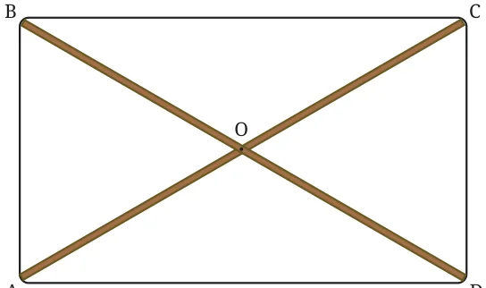
- What is the length of the other diagonal?
- What is the point of intersection of the two diagonals?
- What should the angle be between the diagonals?
Let us answer these questions using geometric reasoning (deduction). If that is challenging, try to construct/ measure some rectangles. To find the answers to these \(AC = 8\) cm questions, let us suppose that we have placed the diagonals such that their endpoints form the vertices of a rectangle, as shown in Fig. 2.
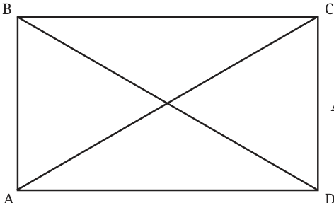

Deduction \(1 -\) What is the length of the other diagonal?
This can be deduced using congruence as follows -
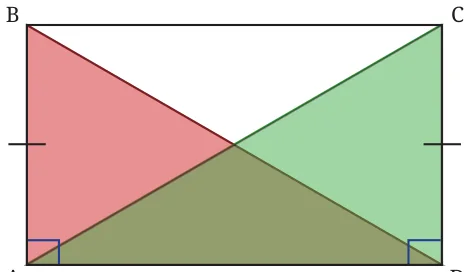
Since ABCD is a rectangle, we have \(AB = CD \angle BAD = \angle CDA = 90 ^{\circ} AD\) is common to both triangles. So, \(\triangle ADC \cong \triangle DAB\) by the SAS congruence condition.
Therefore, \(AC = BD\), since they are corresponding parts of congruent triangles. This shows that the diagonals of a rectangle always have the same length. So the other diagonal must also be 8 cm long. You can verify this property by constructing/measuring some rectangles.
Deduction \(2 -\) What is the point of intersection of the two diagonals?
This can also be found using congruence. Since we need to know the relation between OA and OC, and OB and OD, which two triangles of the rectangle ABCD should we consider?
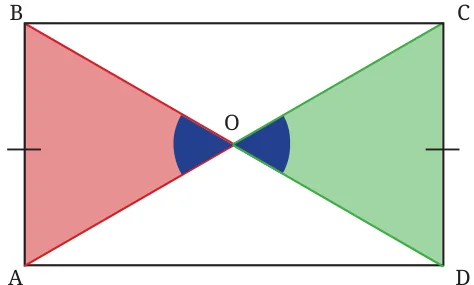
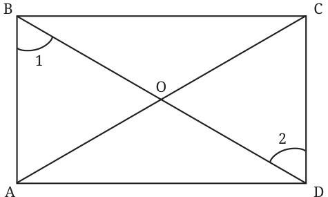
The blue angles are equal since In order to show congruence, they are vertically opposite consider \(\angle 1\) and \(\angle 2\). Are they angles. equal?
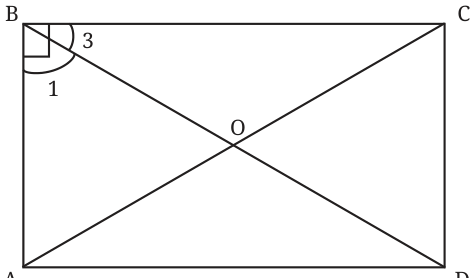
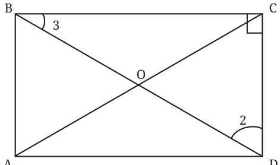
Since \(\angle B = 90 ^{\circ}\) , In \(\triangle BCD\), since

So, \(\angle 1 = \angle 2 (= 90 ^{\circ} - \angle 3)\).
Thus, by the AAS condition for congruence, \(\triangle AOB \cong \triangle COD\). Hence \(OA = OC\) and \(OB = OD\), since they are corresponding parts of congruent triangles. So, O is the midpoint of AC and BD. This shows that the diagonals of a rectangle always intersect at
their midpoints.
Therefore, to get a rectangle, the diagonals must be drawn so that they are equal and intersect at their midpoints. When the diagonals cross at their midpoints, we say that the diagonals bisect each other. Bisecting a quantity means dividing it into two equal parts. Verify this property by constructing some rectangles and measuring their diagonals and the points of intersection. Can the following equalities be used to establish that \(\triangle AOD \cong \triangle COB\)? \(AO = CO\) (proved above) \(\angle AOB = \angle COD\) (vertically opposite angles) \(AD = CB\)
Deduction \(3 -\) What are the angles between the diagonals?
Let us check what quadrilateral we get if we draw the \(^{A} B\) two diagonals such that their lengths are equal, they bisect each other and have an arbitrary angle, say \(60 ^{\circ}\) , between them as shown in the figure to the right.
Can you find all the remaining angles?
_{O} We can find the remaining angles between the \(120 ^{\circ} 120 ^{\circ}\) diagonals using our understanding of vertically opposite angles and linear pairs.
In \(\triangle AOB\), since \(OA = OB\), the angles opposite them \(120 ^{\circ} _{O} 120 ^{\circ}\) are equal, say a. \(60 ^{\circ}\) Can you find the value of a?

In \(\triangle AOB\), we have, \(a + a + 60 = 180\) (interior angles of a triangle).
Therefore \(2a = 120\). Thus \(a = 60\).
Similarly, we can find the values of all the other angles.
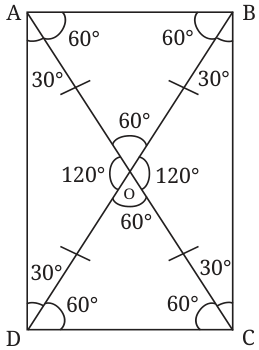
Can we now identify what type of quadrilateral ABCD is? Notice that its angles all add up to \(90 ^{\circ} (30 ^{\circ} + 60 ^{\circ}\) ). What can we say about its sides?
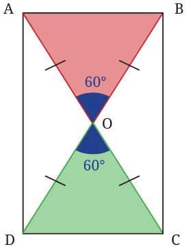
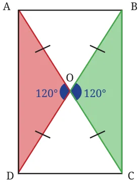
We can see that \(\triangle AOB \cong \triangle COD\) and \(\triangle AOD \cong \triangle COB\). Hence, \(AB = CD\), and \(AD = CB\), since they are corresponding parts of congruent triangles. Therefore, ABCD is a rectangle since it satisfies the definition of a rectangle.
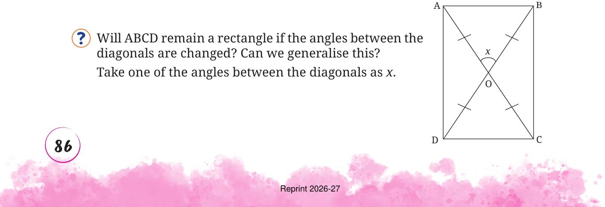

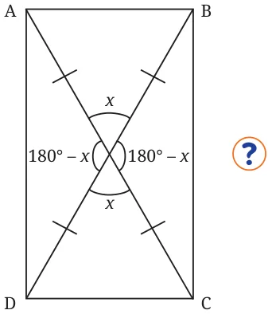
We can compute the four angles between the diagonals to be x, x, \(180 - x\), and \(180 - x\). Can you find the other angles?
Since we know that \(\triangle AOB\) is isosceles, we can denote the measures of both of its base angles by a.
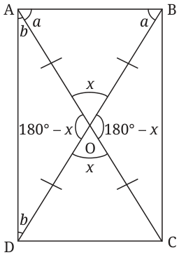
What is the value of a (in degrees) in terms of x? We have,
\(a + a + x = 180\)
(sum of the interior angles of a triangle)
\(2a = 180 - x a = \frac{(180 - x)}{2} = 90 - \frac{x}{2}\) .
Similarly, in the isosceles \(\triangle AOD\), let the base angles be b.
\(b + b + 180 - x = 180\)
\(2b = 180 - (180 -\) x)
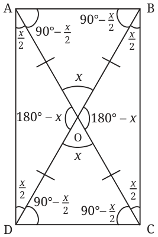
\(2b = 180 - 180 + x\)
\(2b = x\)
\(b = \frac{x}{2}\) .
All the angles of the quadrilateral are \(a + b\), which is
\(90 - \frac{x}{2} + \frac{x}{2} = 90\).
Thus, all four angles of the quadrilateral ABCD are \(90 ^{\circ}\) . What can we say about AB and CD, and AD and BC? We have \(\triangle AOB \cong \triangle COD\) and \(\triangle AOD \cong \triangle COB\). Hence, \(AB = CD\), and \(AD = CB\), since they are the corresponding parts of congruent triangles.

Hence, no matter what the angles between the diagonals are, if the diagonals are equal and they bisect each other, then the angles of the quadrilateral formed are \(90 ^{\circ}\) each, and the opposite sides are equal. Thus, the quadrilateral is a rectangle. Now we know how the wooden strips have to be put together to form the vertices of a rectangle! They should be equal and connected at their midpoints.
4 cm 4 cm 4 cm 4 cm 4 cm 4 cm A O C A O C A O C
This method is actually used in practice to make rectangles. Carpenters in Europe use this method to get a rectangular frame. It is also known that farmers in Mozambique, a country in Africa, use this method while constructing houses to get the base of the house in a rectangular shape.